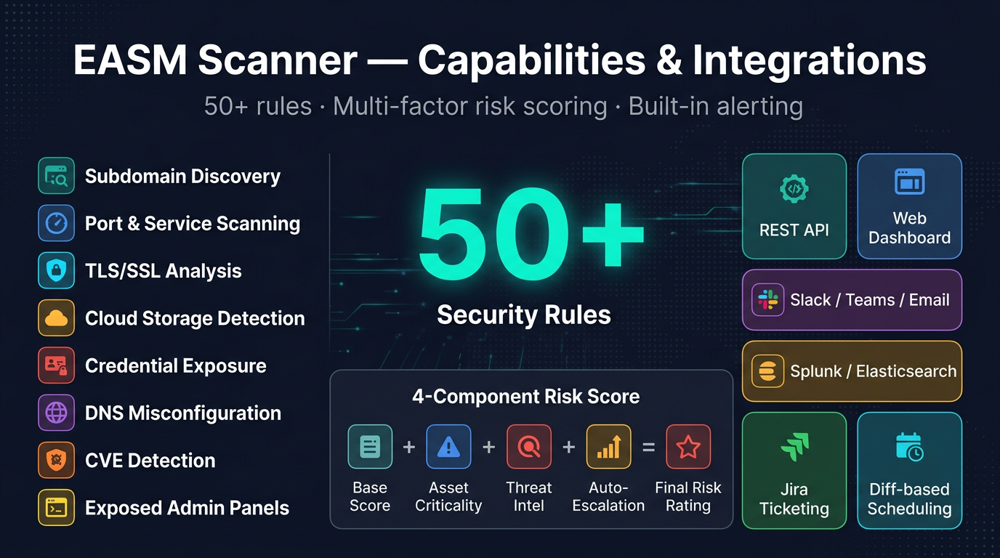
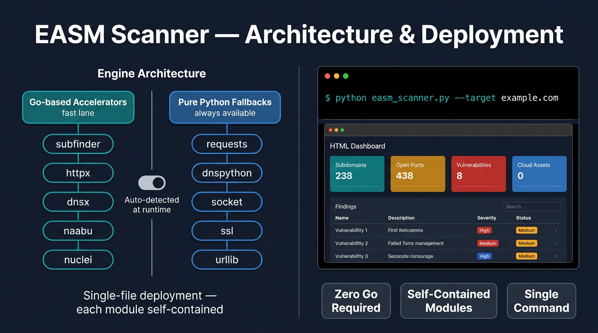
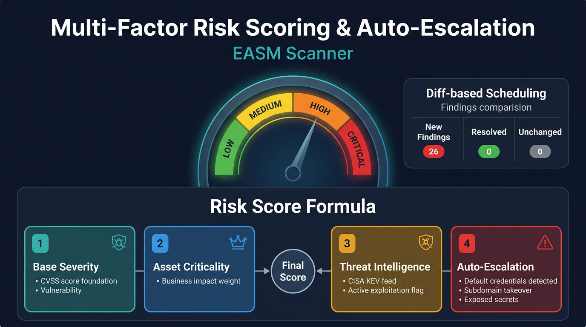

01Overview
EASM Scanner is a comprehensive External Attack Surface Management platform written in pure Python, inspired by commercial solutions like CyCognito, Censys and Mandiant ASM. From a single command it runs a fully automated 14-step pipeline that ingests seeds (domains, IPs, CIDRs, ASNs), discovers and maps internet-facing assets, enriches them, assesses them for vulnerabilities, and produces risk-scored findings — turning an unknown, sprawling internet footprint into a prioritized, actionable inventory.
Its defining design choice is zero hard dependencies on external tooling. The scanner wraps high-performance Go tools from ProjectDiscovery (subfinder, httpx, dnsx, naabu, nuclei, tlsx, asnmap, gowitness) as optional accelerators, but ships a pure-Python fallback for every capability — so it works out of the box with only `requests` and `dnspython`. Every module is self-contained with its own dataclasses, making the codebase easy to read, test and extend.
What sets it apart from a plain scanner is the blue-team and intelligence tooling built on top. It performs unknown-asset discovery (siblings, subsidiaries, shadow IT) via five passive pivots with confidence scoring; cross-references your own surface against six free threat-intel feeds; and pairs every exposure with its defensive counterpart — MITRE ATT&CK technique tags plus ready-to-deploy Sigma rules. Findings flow into a multi-factor risk score with auto-escalation, and out through a FastAPI dashboard, multi-channel alerts, SIEM/STIX exports and Jira ticketing.
It is built for security engineers, red/purple teams and SOC leaders who need to continuously see what an attacker sees — with diff-based scheduling and risk-trend-over-time so they can answer the question every CISO asks: 'is our footprint actually shrinking?'
02Key Capabilities
14-Step Automated Pipeline
One command carries seeds from ingestion through discovery, enrichment, vulnerability assessment and risk-scored findings across four phases.
Zero-Dependency by Design
Runs with just requests + dnspython; every Go/ProjectDiscovery tool wrapper has a pure-Python fallback so it works without any external tooling.
Unknown-Asset Discovery (Attack Surface Intelligence)
Finds org-owned assets you didn't know about via five passive pivots — certificate-SAN, reverse-WHOIS, passive DNS, favicon-hash and ASN-to-org — with method-aware confidence scoring.
Threat-Intelligence Enrichment
Matches your own IPs/domains against six free feeds (Feodo, ThreatFox, URLhaus, FireHOL, Spamhaus DROP, Tor) to flag assets that are already known-bad, no API keys required.
Detection Pairing (Blue-Team Artifacts)
Emits the defensive counterpart of each exposure — MITRE ATT&CK technique tags plus generated, deploy-ready Sigma rules written one YAML per finding.
CVE & Nuclei Vulnerability Assessment
Version-fingerprints against 25+ CVE entries enriched with EPSS and CISA KEV, and runs Nuclei via Go binary with built-in Python templates as fallback.
Subdomain Takeover Detection
Detects dangling DNS/CNAME records vulnerable to takeover across 25 cloud providers including AWS, Azure, GitHub Pages, Heroku, Netlify, Vercel and Shopify.
Web Misconfiguration & Cloud Storage Enumeration
Checks 39 sensitive paths (.env, .git, backups, admin, Swagger), CORS, open redirect and directory listing, plus S3/Azure Blob/GCS public-access testing.
DNS Security & Default Credential Testing
Validates SPF/DKIM/DMARC, tests AXFR zone transfer and CAA, and safely probes default credentials across 8 service types with 36 credential pairs.
Multi-Factor Risk Scoring
A four-component 0-100 score (severity, asset criticality, exploitability, temporal) with five auto-escalation rules for KEV, default creds, takeover and public buckets.
REST API, Dashboard & Multi-Channel Reporting
Ships a 13-endpoint FastAPI server, a dark-themed SPA dashboard, and export to Slack/Teams/Email, Splunk/Elasticsearch/Syslog, STIX 2.1 and Jira.
Diff-Based Scheduling & Risk Trends
SQLite-backed scan history computes new/resolved/unchanged findings across runs and reports attack-surface exposure-reduction % with ASCII sparklines.

03Architecture
A single orchestrator (easm_scanner.py) drives a 14-step, four-phase pipeline over self-contained modules that each return their own dataclass results. Assets and Findings are the shared data model, persisted through a SQLite-backed asset store; every phase enriches the same in-memory inventory. Go/ProjectDiscovery tools are optional accelerators, each fronted by a pure-Python fallback, and results fan out to a FastAPI/dashboard layer and to alerting, SIEM, STIX and Jira exporters.

04Project Structure
easm_scanner.pyMain orchestrator: CLI, the 14-step pipeline, safety caps, and console/HTML/JSON reporting (~2,279 lines).models/Shared data model — asset.py (Asset dataclass) and finding.py (Finding dataclass with severity ranking).modules/32 self-contained pipeline modules across discovery, enrichment, vuln assessment, intelligence and reporting/integration.api/server.py (13-endpoint FastAPI REST API) and dashboard.py (dashboard data renderer with offline injection).templates/dashboard.htmlInteractive dark-themed single-page dashboard with severity/category charts, asset inventory and scan launcher.config/settings.yamlDefault configuration for threads, resolvers, ports and timeouts.wordlists/subdomains-top1000.txtCommon subdomain prefixes used for DNS brute-force discovery.tests/Pytest suite (93 tests) covering models, seed manager, asset store, risk scorer, intel, trends, dashboard, STIX, detection pairing and threat intel, plus an import smoke test..github/workflows/tests.ymlGitHub Actions CI: byte-compile + pytest matrix on Python 3.10-3.13 with a --help smoke test.requirements.txtDependencies — required requests/dnspython, optional fastapi/uvicorn and commented credential-testing libs.CLAUDE.mdDeveloper guide documenting architecture, rule IDs, safety caps, risk scoring and conventions.run_demo.pyStandalone demo runner for exercising the pipeline.05Security Controls

06Technology Stack
- Language
- Python 3.10+ (pure Python, ASCII-safe for cross-platform)
- Required deps
- requests >= 2.31.0, dnspython >= 2.4.0
- API/Dashboard
- FastAPI >= 0.104.0 + Uvicorn >= 0.24.0 (optional, --serve mode)
- Optional Go tools
- ProjectDiscovery subfinder, httpx, dnsx, naabu, asnmap, tlsx, nuclei, gowitness
- Optional cred-test libs
- paramiko, mysql-connector-python, psycopg2-binary, pymongo
- Storage
- SQLite (asset store, scan history, trend metrics)
- Testing
- pytest — 93 deterministic, network-free tests
- CI
- GitHub Actions matrix on Python 3.10-3.13 (byte-compile + pytest + --help smoke test)
07Quick Start
$ pip install -r requirements.txt $ python easm_scanner.py -d example.com --org "ACME Corp" -v $ python easm_scanner.py -d example.com --html report.html --json scan.json $ python easm_scanner.py -d example.com --threat-intel --sigma-out ./sigma $ python easm_scanner.py -d example.com --org "ACME Corp" --discover-related --intel-expand $ python easm_scanner.py -d example.com --serve --port 8888
08Compliance & Frameworks
09Integrations & Outputs
Explore Attack Surface Management
Full source, documentation, and deployment guides live on GitHub.